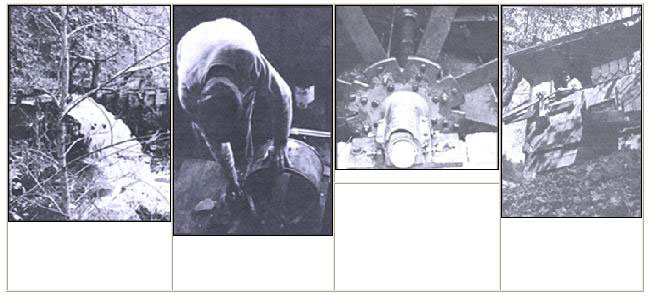
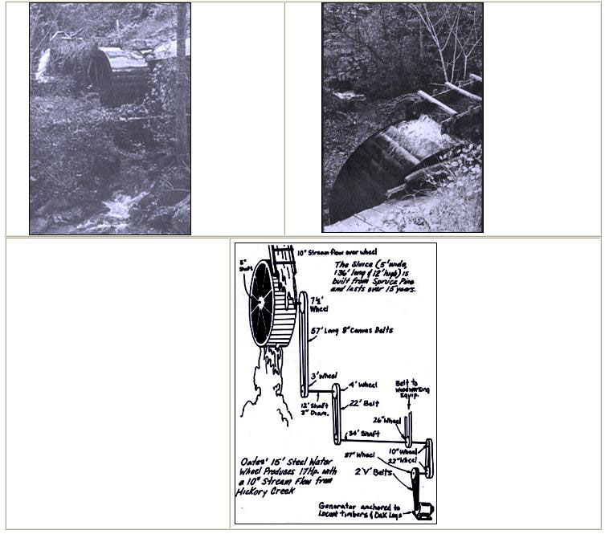

(YE OLD WATER WHEEL - FOR A BOUNTIFUL OF ENERGY)
The old water wheel-used in the United States for grinding grains and producing energy at the beginning of the Industrial Revolution-has declined in popularity since this country's rural electrification program was initiated in the early 1930's. There are, however, still individuals who refuse to give up the virtually free power source.
One such person is Thomas Oates of Route 74, Gerton, North Carolina. Sparkling, crystal clear water has splashed over his water wheel for more than four decades now . . . to provide his woodworking shop, office and home with electricity since long before transmission lines were installed in this onetime remote mountainous area of the Tar Heel State.
Tom, an agile 71-year-old craftsman, owns and operates The Manual Wood-Workers-a crafts and souvenirs center-where thousands of people stop each year to sample sourwood honey and to buy handmade cedar churns, dulcimers or cornshuck dolls made by the local mountaineers.
Although Oates doesn't depend on his current metal water wheel as completely as he relied on his first wooden one back in 1933, it-and quick-flowing Hickory Creek-still provides his business with standby power.
Tom-who was born and raised near Asheville, North Caro lina-started his first hydroelectric project during the depression, "when I had plenty of time to think about things".Oates adds, "My brother sent me three direct current (DC) generators from New York City, and I had the water ... so the two just fit together."
A total of sixteen woodworking machines and a battery of over fifty lights were hooked into that initial electrical system, to satisfy all of Oates' energy needs eleven years before commercial lines were run through his section of the country.
"Even after the power company put electricity in here," Tom chuckles, "I kept my generation unit going because it was more dependable. With the old utility company, the power was off more than it was on."
Because of this constant interruption of service, Oates wired his shop and home for both DC and Alternating Current (AC). "I kept every other light hooked up to DC and I still use the same setup today. I call it my security protection system because I can leave half the lights burning without them costing me a cent," Tom says.
The wheel Tom now uses is made of steel and measures 15 feet in diameter. It was manufactured in 1914 by the Fitz Waterwheel Company of Hanover, Pennsylvania (the firm is no longer in business) and was originally used for milling grains. The Greenville, South Carolina City Waterworks then bought the apparatus secondhand and ran a generator with it until the utility sold it to Oates 26 years ago. "it cost me $200 to buy the wheel and another $300 to fix it up and transport it to my site here on the edge of Bearwallow Mountain (elevation 4,249 ft.)."
While standing amidst the cluttered workshop that overlooks his hydroelectric plant, Tom describes how he funnels Hickory Creek's flow through a 136-foot-long sluice-an artificial channel for diverting water-to his water wheel. "It's lasted me a good long time," he says, "and I've never had a bit of trouble with it.All I've done is look after the sluice and make a few minor adjustments along the way. But this fall I think I'll have to build another one because the wood is finally starting to rot."
The sluice is 5 feet wide, 12 feet high and directs water over the wheel (making this an overshot system) to provide approximately 17 horsepower at 15 rpm. By stepping this rotational force through a series of belts, jack shafts and seven pulleys, Oates uses it to turn his electrical generator at approximately 800 rpm.
And that's where the bind comes in with most homebuilt hydroelectric systems: matching the setup's output to the amount of power needed. That is: A DC generator of a certain size will have to run at a specific speed to produce enough electricity to light, say, a 100-watt bulb. If you suddenly turn on two more 100-watt lights, however, all the bulbs will glow only weakly unless you also increase the rpm of the DC generator to meet the increased energy demand.
Oates overcame this problem by placing a sluice gate a few feet behind the spillway which regulates the amount of waterflow over the wheel.By means of pulleys, Tom can open or close this gate from his shop or home.
"It took a lot of experimenting," Oates recalls, "to get the system working right. One time when my daughter was a baby, she yanked on a pulley-cable and opened the sluice gate all the way-making the water shoot full-blast over the wheel-and it blew out every clang light on the place." After that, Tom put in a safety mechanism to prevent a recurrence of the accidental power surge. "It just took a lot of trial and error to hook up this operation. The pulleys are from all over and I doubt if you can find them very easily anymore. When my son and I rebuild the sluice this fall, we'll be putting in another generator, but I'm getting a little old for this kind of thing now. The system has worked for me though, and it's been fun to play with."
Even when the water's low in Hickory Creek, the stream supplies enough power to create electricity. Tom uses a 5-horsepower, 220-volt DC generator which produces 110 volts at 800 rpm. This setup is capable of running 50 or more 60-watt light bulbs ... more than enough to light Oates' office and run his shop and home.
"It's easy enough to do," says our country woodworker. "All it takes is a little figuring and some work." If you have a good stream of water flowing on your property, you might well look into the idea of harnessing it with your own hydroelectric plant.
|
TOP LEFT TO RIGHT. Access water gushes from the spillway, directly in front of the sluice gate. Oates checks lead connections to generator. Bushings and shaft of Fitz Water Wheel. Our inventive craftsman adjusts wooden '.'light switch "" that regulates sluice gate. |
 TOP LEFT TO RIGHT. Water streams over the Fitz Wheel as access flow from the ""race"" is diverted by the sluice gate. The water outlet is positioned six inches above the wheel so that logs and other debris shoot out over the buckets, preventing damage. BOTTOM RIGHT. Oates uses a series of nine drive pulleys connected by canvas belts to transfer the power from the water wheel to the generator and woodworking equipment. This setup enables our mountaineer craftsman to produce enough electricity to run more than 50 light bulbs. |
 |